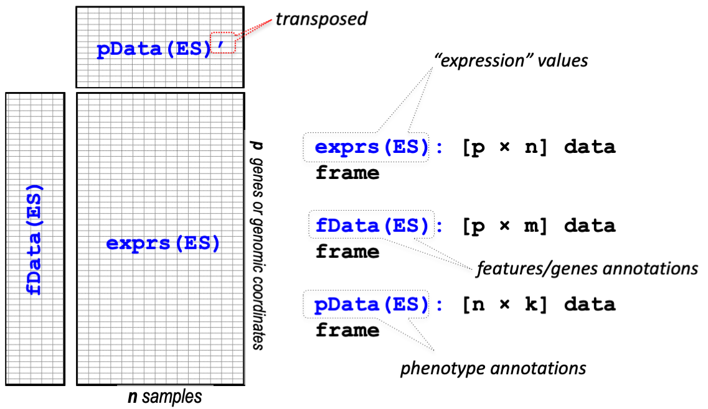

21 High-throughput data analysis
21.1 High-throughput genomic data
Sequence Read Archive
SRA SRA (Sequence Read Archive)는 High-throughput 시퀀싱 데이터의 공개 데이터베이스 중 가장 큰 규모의 미국 국립 보건원(NIH)의 1차 데이터베이스로서 서열데이터 뿐만 아니라 메타데이터, 유전체, 및 환경 데이터를 포함합니다. NCBI와 EBI(European Bioinformatics Institute), DDBJ(DNA Database of Japan) 간 국제적 제휴를 통해 세 기관에서 제출 받은 데이터는 서로 공유되고 있습니다.
간략한 사용법은 NBK569238 또는 SRA download 문서 이곳을 참고하시기 바랍니다.
데이터를 다운로드 할 수 있는 NCBI SRA Toolkit을 제공하며 이 중 MS Windows 64 bit architecture 를 다운로드 받아 압축을 풀고 사용할 적절한 디렉토리로 옮겨 줍니다. 여기서는 D:\sratoolkit.3.0.0-win64이 곳에 이동해 두었고 전체 디렉토리 구성은 다음과 같습니다.

명령을 어느 디렉토리에서나 사용하고 싶다면 위 경로의 bin 디렉토리를 path로 잡아주는 과정이 필요합니다. 다음 위치로 이동 후 “내PC > 속성 > 고급 시스템 설정 > 환경변수” 를 클릭하면 다음 창이 생성됩니다.

Path를 선택후 편집을 클릭하면 다음 화면이 생성되고 새로만들기를 누른 후 D:\sratoolkit.3.0.0-win64\bin라고 입력해주고 모든 창에서 확인을 눌러주면 되겠습니다.

이제 파일 탐색기로 파일을 다운로드 받을 작업 디렉토리로 이동한 후 주소창에 cmd이라고 입력해서 프롬프트가 있는 명령창을 실행합니다.
fastq-dump.exe를 사용해서 다운로드 받을 수 있으며 최근에는 fasterq-dump를 사용해서 더욱 빠르게 다운로드를 받을 수 있습니다.

뒤에서 설명할 GEO 데이터베이스에서 GSE148719 데이터를 다운로드 해보겠습니다. 위 링크를 클릭해서 들어가면 화면 하단의 SRA Run Selector 라는 링크가 있고 이를 클릭하면 다음과 같은 화면이 보입니다.

Metadata (SraRunTable.txt) 와 Accession list (SRR_Acc_List.txt)를 파일 형태로 다운로드 받은 후 적절한 전처리 후 사용하면 되겠습니다.
prefetch --option-file SRR_Acc_List.txt만약 하나의 fastq 데이터만 다운로드 받을 경우 다음과 같습니다.
prefetch SRR11549076이후 fasta 파일로 변환해 줍니다
fasterq-dump --split-files SRR11549076100000개 read만 별도로 저장
fastq-dump -X 100000 --split-files SRR11549076Gene expression omnibus (GEO)
GEO는 microarray, next-generation sequencing 등의 high-throughput 유전체 데이터를 보유한 공공 저장소입니다.
- 대규모 기능유전체 데이터베이스
- 데이터 기탁 쉽게 만들고 고수준 QC 유지
- 사용하기 쉬운 인터페이스 유지
Platform, Sample, Series로 구성되어 있으며 Platform은 사용된 어레이 플랫폼에 대한 설명과 데이터 테이블로 구성되어 있습니다. GPLXXX 형태의 GEO 액세스 번호가 할당되며 하나의 플랫폼은 많은 샘플들에 사용될 수 있습니다. Sample은 개별 샘플이 처리된 조건 등의 설명이 있는 테이블로 구성되며 GSMxxx 형태의 GEO 등록 번호가 할당됩니다. Sample은 하나의 Platform만 참조 가능하며 여러 Series에 포함될 수 있습니다. Series는 관련된 샘플을 그룹화하고 전체 연구의 주요 설명을 제공합니다. GEO 등록 번호 GSExxx가 할당됩니다.

위 세 가지 타입 외에 Datasets 이 있으며 Datasets은 GDSxxx 아이디를 가집니다. 앞서 Series (GSExxx) 데이터가 연구자들이 업로드한 raw 데이터라고 한다면 Datasets (GDSxxx)는 관리자들에 의해 큐레이션된 데이터로 볼 수 있습니다. 브라우져를 통해 쉽게 검색할 수 있습니다. Bioconductor에서는 GEOquery라는 패키지로 관련 파일들을 다운로드 받을 수 있습니다.
if (!requireNamespace("BiocManager", quietly = TRUE))
install.packages("BiocManager")
BiocManager::install("GEOquery")
library(GEOquery)
#browseVignettes("GEOquery")The GDS class
gds <- getGEO(filename=system.file("extdata/GDS507.soft.gz",package="GEOquery"))
class(gds)
methods(class=class(gds))
Table(gds)
Columns(gds)The GSM class - 샘플의 실제 측정값과 실험 조건 등 샘플별 정보 포함. 참고로 MAS 5.0 알고리즘은 서열의 Perfect-Match (PM)과 Mismatch (MM)를 이용해서 유전자의 발현을 정량화 하는 방법으로 (logged) PM-MM의 평균으로 계산함.
gsm <- getGEO(filename=system.file("extdata/GSM11805.txt.gz",package="GEOquery"))
methods(class=class(gsm))
head(Meta(gsm))
Table(gsm)
Columns(gsm)The GPL class - 사용된 칩의 기본 Annotation 정보
gpl <- getGEO(filename=system.file("extdata/GPL97.annot.gz",package="GEOquery"))
gplThe GSE class - 관련된 샘플, annotation 들의 집합 (실험)
21.2 ExpressionSet class
Biobase 패키지는 지놈 데이터를 관리하기 위한 표준화된 데이터 구조 class인 ExpressionSet를 제공합니다. ExpressionSet은 HT assay 데이터와 실험 meta를 포함하고 있습니다.
 출처BS831 lecture note
GES 데이터 받기 GSE2553
gse2553 <- getGEO('GSE2553',GSEMatrix=TRUE)
gse2553
class(gse2553)
class(gse2553[[1]])
mygse <- gse2553[[1]]
?ExpressionSet
methods(class=class(mygse))
pData(mygse)
fData(mygse)
exprs(mygse)GDS 데이터를 ExpressionSet class로 변환하기
gds <- getGEO(filename=system.file("extdata/GDS507.soft.gz",package="GEOquery"))
class(gds)
eset <- GDS2eSet(gds, do.log2=TRUE)
eset21.3 SummarizedExperiment Class
ExpressionSet은 일반적으로 행이 feature (유전자) 인 마이크로어레이 기반 실험 및 유전자 발현 데이터에 사용되었습니다. 그러나 유전체 분석을 위해서는 유전자 정보 외에도 유전체상의 위치 정보 등이 필요하며 이는 앞서 배운 GenomicRanges 형태의 데이터가 필요합니다. 따라서 최근에는 새로운 버전인 SummarizedExperiment class가 SummarizedExperiment 개발되어 사용되고 있습니다.

library(SummarizedExperiment)
if (!requireNamespace("BiocManager", quietly = TRUE))
install.packages("BiocManager")
BiocManager::install("airway")
library(airway)
data(airway, package="airway")
se <- airway
se
# Row (regions-of-interest) data
rowRanges(se)
# Column (sample) data
colData(se)
# Experiment-wide metadata
metadata(se)SummarizedExperiment 생성
nrows <- 200
ncols <- 6
counts <- matrix(runif(nrows * ncols, 1, 1e4), nrows)
rowRanges <- GRanges(rep(c("chr1", "chr2"), c(50, 150)),
IRanges(floor(runif(200, 1e5, 1e6)), width=100),
strand=sample(c("+", "-"), 200, TRUE),
feature_id=sprintf("ID%03d", 1:200))
colData <- DataFrame(Treatment=rep(c("ChIP", "Input"), 3),
row.names=LETTERS[1:6])
se <- SummarizedExperiment(assays=list(counts=counts),
rowRanges=rowRanges, colData=colData)
# Row (regions-of-interest) data
rowRanges(se)
# Column (sample) data
colData(se)
# Experiment-wide metadata
metadata(se)
se[1:5, 1:3]
se[, se$cell == "N61311"]
counts <- matrix(1:15, 5, 3, dimnames=list(LETTERS[1:5], LETTERS[1:3]))
dates <- SummarizedExperiment(assays=list(counts=counts),
rowData=DataFrame(month=month.name[1:5], day=1:5))
# Subset all January assays
dates[rowData(dates)$month == "January", ]
assays(se)
roi <- GRanges(seqnames="1", ranges=100000:1100000)
subsetByOverlaps(se, roi)21.4 High-throughput genomic data analysis
- Bioconductor에는 RNA-seq를 포함한 대규모 high-throughput 서열 데이터의 분석을 지원하는 많은 패키지가 있습니다. 본 학습에서는 아래 소개된 분석 예제를 통해 RNA-Seq 데이터 분석의 기술을 익히도록 합니다. RNA-Seq CSAMA 2022. 사용되는 데이터는
airway2에 저장된 8개의 RNA-seq 샘플에 (1차 인간 기도 평활근 세포주 4개 처리군, 4개 대조군) 대한 정량 데이터가 되겠으며 PMID: 24926665. GEO: GSE52778 및 다음 논문을 참고하시면 되겠습니다. (Himes BE, Jiang X, Wagner P, Hu R, Wang Q, Klanderman B, Whitaker RM, Duan Q, Lasky-Su J, Nikolos C, Jester W, Johnson M, Panettieri R Jr, Tantisira KG, Weiss ST, Lu Q. ‘RNA-Seq Transcriptome Profiling Identifies CRISPLD2 as a Glucocorticoid Responsive Gene that Modulates Cytokine Function in Airway Smooth Muscle Cells.’ PLoS One. 2014 Jun 13;9(6):e99625)
library(airway)
dir <- system.file("extdata", package = "airway")
list.files(dir)
list.files(file.path(dir, "quants"))21.5 rtracklayer
https://www.bioconductor.org/packages/release/bioc/vignettes/rtracklayer/inst/doc/rtracklayer.pdf
rtracklayer: UCSC web-based genome browser
21.6 ggbio
Make gene model from OrganismDb object
library(ggbio)
library(Homo.sapiens)
class(Homo.sapiens)
data(genesymbol, package = "biovizBase")
wh <- genesymbol[c("BRCA1", "NBR1")]
wh <- range(wh, ignore.strand = TRUE)
p.txdb <- autoplot(Homo.sapiens, which = wh)
p.txdb
# orgDB
library(org.EcK12.eg.db)
class(org.EcK12.eg.db)
methods(class="OrgDb")
columns(org.EcK12.eg.db)
keys(org.EcK12.eg.db)
tmp <- AnnotationDbi::select(org.EcK12.eg.db, keys(org.EcK12.eg.db), "ACCNUM")
org.EcK12.eg.db$ACCNUM- BSgenome DB 보다 최신 정보를 얻기 위해서는 NCBI 직접 다운로드
if (!require("BiocManager", quietly = TRUE))
install.packages("BiocManager")
BiocManager::install("BSgenome.Ecoli.NCBI.20080805")
library(BSgenome.Ecoli.NCBI.20080805)
?BSgenome.Ecoli.NCBI.20080805
genome <- BSgenome.Ecoli.NCBI.20080805
seqlengths(genome)
available.genomes()
genome$NC_008253
library(rentrez)
library(genbankr)
tmps <- entrez_fetch("nuccore", id="NC_000913.3", rettype="gbwithparts")
write(tmps, "ecoli-mg1655.gb")
ecoligb <- readGenBank("ecoli-mg1655.gb")
ecoli_cds <- cds(ecoligb)
ecoli_cds
p.txdb <- autoplot(ecoli_cds)
p.txdb
#library(igvR)
ecoli_cds
ggbio() +
circle(ecoli_cds, geom = "ideo", fill = "gray70") +
circle(ecoli_cds, geom = "scale", size = 5) +
circle(ecoli_cds, geom = "text", aes(label = locus_tag), vjust = 0, size = 3) +
theme(
axis.text.x = element_text(angle=90)
)
gr1 <- granges(ecoli_cds)
gr2 <- granges(ecoli_cds)
mcols(gr2)$test <- rnorm(length(ecoli_cds))
ggplot() +
layout_circle(ecoli_cds, geom = "ideo", fill = "gray70", radius = 9, trackWidth = 1) +
layout_circle(ecoli_cds, geom = "scale", size = 3, trackWidth = 1, scale.n=20) +
layout_circle(gr1, geom = "rect", color = "steelblue", radius = 5) +
layout_circle(gr2, geom = "bar", aes(y=test), size = 3, trackWidth = 1, scale.n=20, radius = 4)
library(igvR)
if (!requireNamespace("BiocManager", quietly = TRUE))
install.packages("BiocManager")
BiocManager::install("igvR")
igv <- igvR()
setGenome(igv, "hg38")21.7 Practice for review
NC_000913.3은 미생물 연구에서 잘 알려진 Escherichia coli str. K-12 substr. MG1655 균주의 Reference sequence 입니다. 해당 지놈 서열의
fasta와gb형태의 포맷으로rentrez패키지를 사용해서 다운로드 하고ecoli-k12.fasta,ecoli-k12.gb파일로 각각 저장하시오. 참고로 genbank 포맷의 full version은rettype=옵션을gbwithparts로 해야함.genbankr패키지를 사용해서ecoli-k12.gb파일을 읽어들이고 Coding sequence 를 추출해서ecolicds라는 변수에 저장하시오plyranges패키지의 filter 함수를 이용해서 ompR 이라는 유전자가 있는지 찾으시오ecolicds에서 다음 12개의 TF에 대한 정보를 추출하시오
"araC" "sgrR" "leuO" "cra" "mraZ" "pdhR" "cdaR" "rclR" "betI" "pdeL" "cynR" "lacI"-
NC_010572.1는 celR이라는 전사인자 단백질로서 cellulase 분해 유전자들의 발현을 제어함. 다음 서열을
celR.fasta파일로 저장하고Biostrings패키지를 사용해서 읽어들이시오.
>NC_010572.1 celR Streptomyces griseus subsp.
ATGGCGGCATCGCGAGTACGGAACGGCGGGCGGCCCACGCTCGAAGAGGTCGCGGCACGGGCCGGGGTCG
GCCGGGGCACCGCCTCACGGGTCATCAACGGCTCGCCCCGGGTCAGCGACGCCACCCGGCAGGCCGTCGA
GGCGGCCGTCGCCGAACTGGGGTACGTCCCCAACCGCGCCGCCCGCGCCCTGGCGGGCAACCGCACCGAC
GCCATCGCGCTGGTGGTCCCCGAGCCGGAGACCCGCTTCTTCGCCGAGCCCTACTTCTCCGCCATAGTGC
GCGGTGTCGGGGCGGCCCTGGCCGACACCGAGATGCAGCTGCTCCTCACCCTCGTCGGCAACGACCGCGA
GCGCCGCAGGCTCGCCCAGTACCTCACCGCCCACCGCGTCGACGGGGTCCTCCTGGTCGCCGTGCACGCC
GATGACCCGCTGCCGGAGCTCCTGGAGCAGCTGGGCATGCCCTGCGTGATCAGCGGCGCCCGGCACGCGG
CCGAGACGCTGCCCTCGGTCGACTCCGACAACTTCGAGGGCGCGCGGGCCGCCGTGGAGCACCTGGTCTC
CCGGGGCCGCCGCCAGGTGGCCACCATCACCGGCCGCCTGGAGGTCTACGGCGCCCAGCGCCGCCTGGAC
GGCTACCGCGCCGCGGTCTCCGCCGCCGGCCTGGCCCCCGACGAGCGCCTGATCGCCCCGGCCGACTTCA
CCGAGGAGGGCGGCGCCCGGGCCATGCGCGACCTCCTGGCCCGCCGCCCCGGCCTCGACGCCGTCTTCGT
GGCCTCCGACGTGATGGCCGCGGGCGCCCGCCAGGTCCTGCGCGAGGCGGACCGCCGCATCCCCGAGGAC
GTGGCCCTGATCGGCTTCGACGACTCGGTGGTCGCCCGCCACATGCACCCGGCCCTCACCAGCGTCCGCC
AGCCCATCGAGGAGATGGGCCGCCGGATGGCCCAGCTCCTCCTGGACGAGATCGCGGGCCGGGCCCCGGG
CGACGAGCGCCCCTCGGTGGTCCTGCCCACGGAGCTGGTGGTCCGCGACTCGTCGTGA- 앞서 ecoli의 전체 지놈 서열을 추출하고 ecoli 지놈에 celr 서열과 유사 서열이 있는지
Biostrings의pairwiseAlignment함수를 이용해서 탐색하시오
21.8 BLAST on local machine
일반적으로 유사 서열을 탐색할 경우 ncbi의 blast을 사용합니다. rBLAST는 BLAST local을 설치한 컴퓨터에서 R을 활용해서 blast를 수행할 수 있게 만든 패키지입니다. local blast 설치는 BLAST Command Line Applications User Manual을 참고하거나 docker 이미지, docker blast manual을 사용해도 되겠습니다.
docker pull ncbi/blast
docker images
library(Biostrings)
dbfile <- "ecolicdsseq.fasta"
ecolicdssec <- getSeq(ecoliseq, ecolicds)
writeXStringSet(ecolicdssec, dbfile)
targetfile <- "celrseq.fasta"
writeXStringSet(celr, targetfile)파일탐색기에서 working directory로 이동한 후 cmd 실행. 다음 명령어로 blastn 실행 가능.
docker run --rm -v %cd%:/myhome ncbi/blast blastn 데이터베이스 만들기, dbtype은 핵산의 경우에는 ‘nucl’, 단백질의 경우에는 ‘prot’. %cd%는 윈도우 cmd 환경에서 현재 디렉토리를 나타내는 문자
docker run --rm -v %cd%:/myhome -w /myhome ncbi/blast makeblastdb -in ecolicdsseq.fasta -dbtype nucl -out ecoliblastn 수행
docker run --rm -v %cd%:/myhome -w /myhome ncbi/blast blastn -query celrseq.fasta -db ecoli -out blast_output.txt다음 서열을 ribosomalprot.fasta 파일로 저장
>X02130.1 E. coli genes rpsI and rplM for ribosomal proteins S9 and L13
AACACTCGTCCGAGAATAACGAGTGGATCTTTGACCCCGACTTCTCTATAATCCTGCGACCCCACGTTAC
AAGAAAGTTTTTTTCCCAAAACTTTTTGTGTGCTGGCATAGGCTATTCGAAGGGGTAGGTTTGCCGGACT
TTGTCGTGTGAACCTCAACAATTGAAGACGTTTGGGTGTTCACCAACGTGTAACTATTTATTGGGTAAGC
TTTTAATGAAAACTTTTACAGCTAAACCAGAAACCGTAAAACGCGACTGGTATGTTGTTGACGCGACCGG
TAAAACTCTGGGCCGTCTGGCTACTGAACTGGCTCGTCGCCTGCGCGGTAAGCACAAAGCGGAATACACT
CCGCACGTAGATACCGGTGATTACATCATCGTTCTGAACGCTGACAAAGTTGCTGTAACCGGCAACAAGC
GTACTGACAAAGTGTACTATCACCACACCGGCCACATCGGTGGTATCAAACAAGCGACCTTTGAAGAGAT
GATTGCTCGCCGTCCTGAGCGTGTGATTGAAATCGCGGTTAAAGGCATGTTGCCAAAAGGCCCGCTGGGT
CGTGCTATGTTCCGTAAACTGAAAGTTTACGCGGGTAACGAGCACAACCACGCGGCACAGCAACCGCAAG
TTCTTGACATCTAATCGGATTATAGGCAATGGCTGAAAATCAATACTACGGCACTGGTCGCCGCAAAAGT
TCCGCAGCTCGCGTTTTCATCAAACCGGGCAACGGTAAAATCGTAATCAACCAACGTTCTCTGGAACAGT
ACTTCGGTCGTGAAACTGCCCGCATGGTAGTTCGTCAGCCGCTGGAACTGGTCGACATGGTTGAGAAACT
GGACCTGTACATCACCGTTAAAGGTGGTGGTATCTCTGGTCAGGCTGGTGCGATCCGTCACGGTATCACC
CGCGCTCTGATGGAATACGACGAGTCCCTGCGTTCTGAACTGCGTAAAGCTGGCTTCGTTACTCGTGACG
CTCGTCAGGTTGAACGTAAGAAAGTCGGTCTGCGTAAAGCACGTCGTCGTCCGCAGTTCTCCAAACGTTA
ATTGGCTTCTGCTCCGGCAGAAAACAATTTTCGAAAAAACCCGCTTCGGCGGGTTTTTTTATAGGGAAGG
TGCGAACAAGTCCCTGATATGAGATCATGTTTGTCATCTGGAGCCATAGAACAGGGTTCATCAT
>X04022.1 E. coli genes rpsF, rpsR and rplI for ribosomal proteins S6, S18, L9
CAAGCTTTGCACATCGTCCATATTTCTGGCCTGGTGGTTATTAATTTCAATGGCTGCCCATGTATTTGCA
CTTAGCAAAAGCACAGCCAGAAGGGCTAAAACACGACTGAACATAGATACCTCCTCGACGGCTGACTTTG
TGTGCTCTCCTTCCTCGTGATGATCTTCTCGATTTAATTTTAATCAATGATAAAGAAGTTGATGGTGACC
ATTTCTGATGCAGTTGTTCAAAAAAACCACCATGATGAAGTGTGATGAACTTCAAATCAGCGTGTTAGAG
GTTAATTGCGAAAGGGGAGATTTATTTCGGCTCTGCCCTTGAGTTTAGCGAGGCATACAAGTACTATAAC
GGCGTCATTTTTCAGCCGACCTTTAACACGTTCCTTGCCTCCCCGGGATTCGGCTGACCCAGACAGGAGG
CGTGAATAATCCGTAAGGAGCAATTCGATGCGTCATTACGAAATCGTTTTTATGGTCCATCCTGATCAGA
GCGAACAGGTTCCGGGCATGATCGAGCGCTACACTGCTGCCATCACTGGTGCAGAAGGCAAGATCCACCG
TCTGGAAGACTGGGGCCGCCGTCAGCTGGCTTACCCGATCAACAAACTGCACAAAGCACACTACGTTTTG
ATGAATGTTGAAGCTCCGCAGGAAGTGATCGATGAGCTGGAAACTACCTTCCGCTTCAACGATGCCGTTA
TCCGCAGCATGGTTATGCGTACCAAGCACGCTGTTACCGAAGCATCTCCGATGGTTAAAGCGAAAGACGA
GCGCCGTGAGCGTCGCGATGATTTCGCAAACGAAACCGCTGATGATGCTGAAGCTGGGGATTCTGAAGAG
TAATTTCTGATGACCAACCGTCTGGTGTTGTCCGGCACCGTGTGCAGGGCTCCCCTTCGAAAGGTCAGTC
CATCAGGAATTCCTCACTGCCAGTTCGTGCTTGAGCATCGTTCTGTGCAGGAGGAAGCCGGCTTTCACCG
GCAGGCGTGGTGTCAAATGCCCGTTATTGTTAGCGGACACGAAAACCAGGCCATTACTCACAGTATAACG
GTCGGCAGTCGCATAACCGTTCAGGGGTTCATTTCATGCCACAAGGCAAAGAACGGACTGAGCAAAATGG
TTTTGCATGCCGAGCAGATTGAATTGATAGATTCTGGAGACTAGCCATATGGCACGTTATTTCCGTCGTC
GCAAGTTCTGCCGTTTCACCGCGGAAGGCGTTCAAGAGATCGACTATAAAGATATCGCTACGCTGAAAAA
CTACATCACCGAAAGCGGTAAGATTGTCCCAAGCCGTATCACCGGTACCCGTGCAAAATACCAGCGTCAG
CTGGCTCGCGCTATCAAACGCGCTCGCTACCTGTCCCTGCTGCCGTACACTGATCGCCATCAGTAATCGG
TCACAGGTCCATTAATACGACTTTGAGAGGATAAGGTAATGCAAGTTATTCTGCTTGATAAAGTAGCAAA
CCTGGGTAGCCTGGGTGATCAGGTAAACGTTAAAGCGGGCTATGCTCGTAACTTCCTGGTACCGCAGGGT
AAAGCTGTTCCAGCTACCAAGAAAAACATTGAATTCTTCGAAGCTCGTCGCGCTGAACTGGAAGCTAAAC
TGGCTGAAGTTCTGGCAGCTGCTAATGCTCGCGCTGAGAAAATCAATGCACTGGAAACTGTTACCATCGC
GTCTAAAGCTGGCGACGAAGGTAAACTGTTCGGTTCCATCGGTACTCGCGACATCGCTGACGCTGTAACT
GCAGCTGGCGTTGAAGTGGCTAAGAGCGAAGTTCGTCTGCCGAACGGCGTTCTGCGTACCACTGGCGAAC
ACGAAGTGAGCTTCCAGGTTCACAGCGAAGTATTCGCGAAAGTGATCGTAAACGTAGTAGCTGAATAATT
CGTTATTCAACGAGACGTAAAAAGCGCCCGACCATTGGTCGGCGTTTTGCTTTCTATTTTTCGTCAGGTA
TTAGTTTCGCAAGTAGATC
>J01677.1 E.coli rpmB and rpmG genes coding for ribosomal proteins L28 and L33
GGATTTAACCCGCTATGCGCGATCCTTCGGGATCTTTGTCTGTTCGGGACTTGAGCACATCGCTGAGTCA
GCGTATACTACGCCACCTTTGAGAATCTCGGGTTTGGCATTTGGGCCTGGCAATCGAGAGTTCACAGAAC
TGCGATGACCGGGCTGTAAAGACCTGACGAGGCGCCAATACCCCATACGAAGCTCGAGCTAATTTGATTT
TTGGAGAATAGACATGTCCCGAGTCTGCCAAGTTACTGGCAAGCGTCCGGTGACCGGTAACAACCGTTCC
CACGCACTGAACGCGACTAAACGCCGTTTCCTGCCGAACCTGCACTCTCACCGTTTCTGGGTTGAGAGCG
AGAAGCGTTTTGTCACCCTGCGCGTATCTGCTAAAGGCATGCGTGTAATCGATAAAAAAGGCATCGATAC
AGTTCTGGCTGAACTGCGTGCCCGTGGCGAAAAGTACTAAGTACTTAGAGGAAATAAATCATGGCTAAAG
GTATTCGTGAGAAAATCAAGCTGGTTTCTTCTGCTGGTACTGGTCACTTCTATACCACTACGAAGAACAA
ACGTACTAAGCCGGAAAAACTGGAACTGAAAAAATTCGATCCAGTTGTTCGCCAGCACGTGATCTACAAA
GAAGCGAAAATCAAATAATTCTCGCTTTGATGTAACAAAAAACCCCGCCCCGGCGGGGTTTTTTGTTATC
TGCTTGCCCCCATATTGACTGCATCTGTTCATTCCTGGAGATGCTATGCCTGAATTACCCGAAGdocker run --rm -v %cd%:/myhome -w /myhome ncbi/blast blastn -query ribosomalprot.fasta -db ecoli -out blast_output.txt출력물 분석위한 옵션 설정
docker run --rm -v %cd%:/myhome -w /myhome ncbi/blast blastn -query ribosomalprot.fasta -db ecoli -outfmt "6 qseqid sseqid pident length mismatch gapopen qstart qend sstart send evalue stitle" -out blast_output.txt출력물을 읽어들여 아래와 같이 각 hit (서열) 별로 서열 및 관련 단백질 title 정리
library(dplyr)
blastout <- read.delim("blast_output.txt", header = F)
tmplist <- blastout %>%
mutate(query=factor(V1)) %>%
group_by(query) %>%
group_split()
seqid <- lapply(tmplist, function(x){paste(x[1,1])}) %>% unlist
hit_seqid <- lapply(tmplist, function(x){paste(x[1,2])}) %>% unlist
hit_evalue <- lapply(tmplist, function(x){paste(x[1,11])}) %>% unlist
hit_prot_title <- lapply(tmplist, function(x){paste(x[1,12])}) %>% unlist
hitdat <- data.frame(seqid, hit_seqid, hit_prot_title, hit_evalue)
write.table(hitdat, file = "target_blastout_table.tab", sep="\t", quote = F, row.names = F)21.9 Bioconductor Workflow (link)
Bioconductor에서는 다양한 생물학적 데이터를 분석하기 위한 툴이 개발되고 있으며 이러한 툴들은 RNA-seq과 같은 특정 목적을 위해 반복적으로 또는 순차적으로 수행되어야 하고 이러한 일련의 툴 사용 방법을 workflow로 만들어 제공하고 있습니다. 일부 워크플로에 대해서 간단히 리뷰하며 마치도록 하겠습니다.
급성 림프구성 백혈병 데이터 (Annotation)
library(ALL)
data(ALL)
ALL
featureData(ALL)
##
if (!requireNamespace("BiocManager", quietly = TRUE))
install.packages("BiocManager")
BiocManager::install("hgu95av2.db")
library(hgu95av2.db)
browseVignettes("hgu95av2.db")
help(package="hgu95av2.db")
featureNames(ALL)[1:10]
ids <- featureNames(ALL)[1:10]
as.list(hgu95av2ENTREZID[ids])
이 저작물은 크리에이티브 커먼즈 저작자표시-비영리-변경금지 4.0 국제 라이선스에 따라 이용할 수 있습니다.